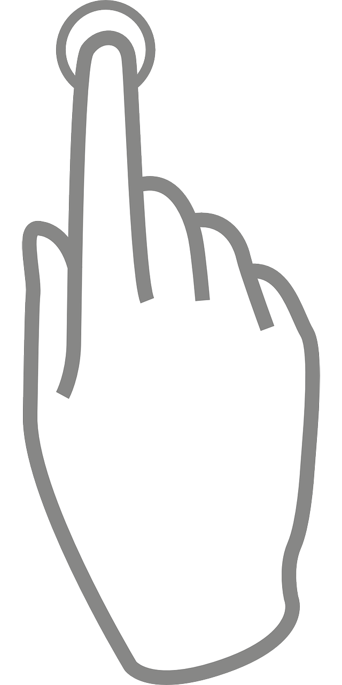

<div id="content">
  <swiper id="principalSwiper" [slidesPerView]="1" class="swiper-content-full">
    <ng-template swiperSlide>
      <div id="content">
        <div class="width-center">
          <div class="floating">
            <ion-icon color="light" style="font-size: 100px;" name="business"></ion-icon>
          </div>
        </div>
        <div class="card-container">
          <ion-card class="custom-card">
            <ion-item color="primary">
              <ion-label>Experiencia laboral</ion-label>
            </ion-item>
            <ion-card-content>
              <ion-grid>
                <ion-row>
                  <ion-col>
                    <div style="width: 100%; text-align: start;">
                      <ion-text id="title">INGENIERIA TECNOLOGIA Y SEGURIDAD S.A.S</ion-text>
                    </div>
                    <div  style="width: 100%; text-align: start;">
                      <ion-text> 
                        Me desempeñé como desarrollador de aplicaciones
                        móviles multiplataforma, web apps y desarrollo de hardware 
                        orientado a tecnologías IOT para seguridad comunitaria y 
                        automatización.
                      </ion-text>
                    </div>
                    <div class="date-container">
                      <ion-text id="date">2019/02 - 2022/06</ion-text>
                    </div>
                    <div style="width: 100%;">
                      <ion-button (click)="nextSwip(1)" expand="block" class="button-next">
                        <ion-icon name="arrow-forward-circle-outline"></ion-icon>
                        Ver algunos proyectos
                      </ion-button>
                    </div>
                  </ion-col>
                </ion-row>
              </ion-grid>
            </ion-card-content>
          </ion-card>
        </div>
      </div>
    </ng-template>
    <ng-template *ngFor="let i of proyects" swiperSlide>
      <div id="container">
        <div id="descriptions" class="content-swiper">
          <div id="title-item-desktop">
            <ion-button (click)="nextSwip(0)" fill="clear" id="button-start">
              <ion-icon name="arrow-back-circle-outline" slot="icon-only"></ion-icon>
            </ion-button>
            <ion-text>{{i.title}}</ion-text>
            <ion-button (click)="nextSwip(1)" fill="clear" id="button-end">
              <ion-icon name="arrow-forward-circle-outline" slot="icon-only"></ion-icon>
            </ion-button>
          </div>
          <div id="text-item">
            <ion-text>{{i.text}}</ion-text>
          </div>
        </div>
        <div id="image-proyects">
          <swiper id="swiper-proyect" [slidesPerView]="slidePerview" [autoplay]="true" (touchstart)="initial = false">
            <ng-template *ngFor="let y of i.images" swiperSlide>
              <div id="finger" *ngIf="initial">
                
              </div>
              
            </ng-template>
          </swiper>
        </div>
      </div>
    </ng-template>
  </swiper>
</div>